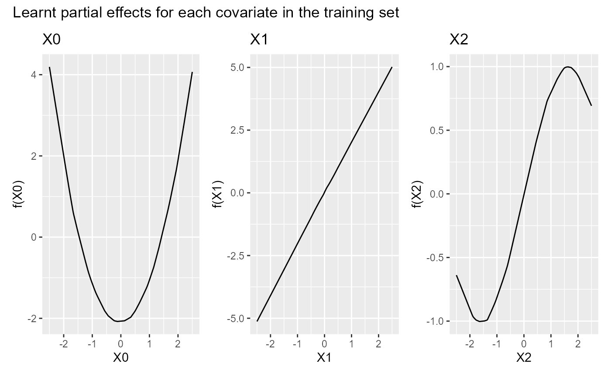

NeuralGAM.RdMain function to fit a NeuralGAM model. The function builds one
neural network to attend to each to each feature in x, using the
backfitting and local scoring algorithms to fit a weighted additive model
using neural networks as function approximators. The adjustment of the
dependent variable and the weights is determined by the distribution of the
response y, adjusted by the family parameter.
NeuralGAM(
x,
y,
num_units,
family = "gaussian",
learning_rate = 0.001,
kernel_initializer = "glorot_normal",
w_train = NULL,
bf_threshold = 0.001,
ls_threshold = 0.1,
max_iter_backfitting = 10,
max_iter_ls = 10,
...
)A data frame containing all the covariates.
A numeric vector with the response values.
defines the architecture of each neural network. Use a numeric
value for shallow neural networks, where num_units defines the number of hidden units, and
a list() of numeric values, where each element defines the number of hidden units on each hidden layer.
A description of the link function used in the model
(defaults to gaussian). Set family="gaussian" for linear
regression and family="binomial" for logistic regression.
learning rate for the neural network optimizer.
kernel initializer for the Dense layers.
Defaults to Xavier Initializer (glorot_normal).
optional sample weights.
convergence criterion of the backfitting algorithm.
Defaults to 0.001
convergence criterion of the local scoring algorithm.
Defaults to 0.1
an integer with the maximum number of iterations
of the backfitting algorithm. Defaults to 10.
an integer with the maximum number of iterations of the
local scoring Algorithm. Defaults to 10.
Other parameters.
NeuralGAM object. See summary(ngam) for details
library(NeuralGAM)
data(train)
head(train)
#> X0 X1 X2 f(X0) f(X1) f(X2) y
#> 1 -0.7351906 -1.7092095 1.6156861 -1.538614934 -3.430178 -3.430178 -5.1207630
#> 2 -0.9346380 1.8562425 -2.0429157 -1.205572066 3.700726 3.700726 1.6531381
#> 3 -1.4816599 0.5976165 -2.3795450 0.116195738 1.183474 1.183474 0.1776291
#> 4 0.5945769 2.2365318 -0.4403814 -1.725598564 4.461305 4.461305 2.4424721
#> 5 1.4386284 1.7939171 -2.3460923 -0.009468417 3.576076 3.576076 2.8480231
#> 6 -0.1694944 -1.0257769 1.8405410 -2.050391860 -2.063313 -2.063313 -2.1984809
X_train <- train[c("X0", "X1", "X2")]
y_train <- train$y
ngam <- NeuralGAM(
x = X_train, y = y_train, num_units = 1024, family = "gaussian",
learning_rate = 0.001, bf_threshold = 0.001,
max_iter_backfitting = 10, max_iter_ls = 10
)
#> [1] "Initializing NeuralGAM..."
#> [1] "Model 1 Summary "
#> [1] "Model 2 Summary "
#> [1] "Model 3 Summary "
#> [1] "ITER LOCAL SCORING 1"
#> [1] "BACKFITTING Iteration 1 - Current Err = 842530646.103499 BF Threshold = 0.001 Converged = FALSE"
#> [1] "BACKFITTING Iteration 2 - Current Err = 0.008704727913482 BF Threshold = 0.001 Converged = FALSE"
#> [1] "BACKFITTING Iteration 3 - Current Err = 0.000458244920239323 BF Threshold = 0.001 Converged = TRUE"
#> [1] "ITERATION_LOCAL_SCORING 1 0.979720300884372"
plot(ngam)
